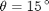
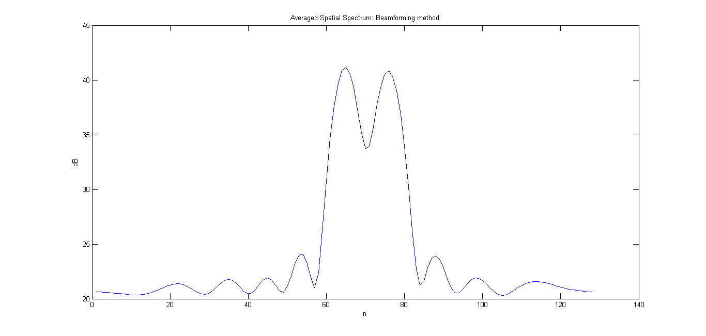
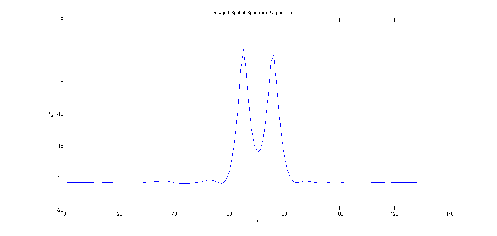
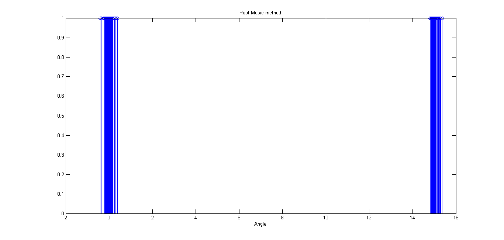
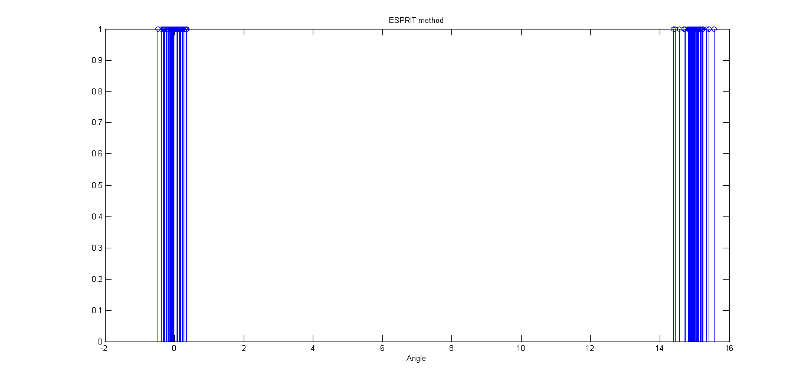
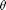

EE779 Computing Assignment 3 (Q1a) ()
Ashwin Kachhara, 10d070048
Contents
Specifying data required: Covariance matrix P and the value of theta.
P = eye(2); theta = 15;
Preparing the empty arrays
y = zeros(10, 100, 50); phi1 = zeros(50, 128); phi2 = zeros(50, 128); theta1 = zeros(50, 2); theta2 = zeros(50, 2);
Data, Processing
Because of the noise component in generation of the ULA data, we will take fifty iterations of ULA data generation and average the final results.
In each iteration, we calculate a new ULA data set, the corresponding spectra via Beamforming, Capon's method. Also, we calculate the Direction of arrival estimates using the Root Music method as well as ESPRIT method.
for i=1:50, y(:,:,i) = uladata([0, theta] ,P,100,1,10,0.5); phi1(i,:) = beamform(y(:,:,i), 128, 0.5); phi2(i,:) = capon_sp(y(:,:,i), 128, 0.5); theta1(i,:) = root_music_doa(y(:,:,i), 2, 0.5); theta2(i,:) = esprit_doa(y(:,:,i), 2, 0.5); end
Beamforming: We calculate the average spectrum corresponding to each set of ULA data and plot it.
phi1avg(1:128) = mean(phi1(:,1:128)); figure(1) plot(20*log10(phi1avg)) ylabel('dB') title('Averaged Spatial Spectrum: Beamforming method'); xlabel('n')
Capon's method: We calculate the average spectrum corresponding to each set of ULA data and plot it.
phi2avg(1:128) = mean(phi2(:,1:128)); figure(2) plot(20*log10(phi2avg)) ylabel('dB') title('Averaged Spatial Spectrum: Capon''s method'); xlabel('n')
For Root-Music, we get estimated direction of arrival. We will attempt to see the spread of estimates by plotting the estimates from each data set with the same height
figure(3) stem(theta1(:), ones(100,1)); title('Root-Music method') xlabel('Angle')
For ESPRIT, we get estimated direction of arrival. We will attempt to see the spread of estimates by plotting the estimates from each data set with the same height
figure(4) stem(theta2(:), ones(100,1)); title('ESPRIT method') xlabel('Angle')
Conclusions
For this value of , each of the method gives a satisfactory result, i.e. the methods are able to resolve both the sources successfully.
The peaks in Capon's method are much sharper, leading to better estimate.
Comparing Root Music and ESPRIT, The Root Music estimates are much closer together (implying less variance). The average value is also closer to the actual value in case of Root Music
The properties of various time series estimators are rougly analogous to the temporal case, with Capon better than Beamforming, and, RootMusic better than ESPRIT